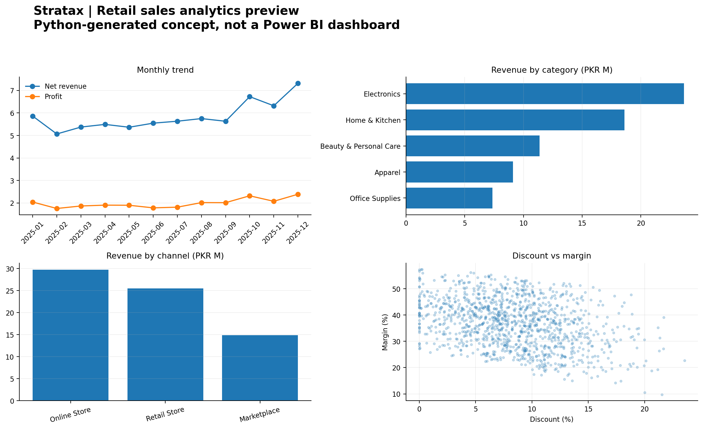

Project 01 · Retail analytics
Retail Sales Performance & Profitability
Business question: Where does revenue come from, and how does profitability vary by month, product category, city, and sales channel?
The project generates a reproducible synthetic dataset, cleans transaction-level data, calculates revenue and profit KPIs, explores channel/category performance, and includes SQL queries plus a Power BI build guide.
